专题11 一元一次方程压轴应用题方案问题
（门票加工租金施工运输进货6种类型36道）

考点01 购买方案问题
考点02 加工方案问题
考点03 租金方案问题
考点04 施工方案问题
考点05 运输方案问题
考点06 进货方案问题

考点01 购买方案问题
1．国庆假期期间，七（1）班的明明、丽丽等同学随家长一同到进士文化园游玩，如下图所示的是购买门票时，明明与他爸爸的对话．试根据图中的信息．
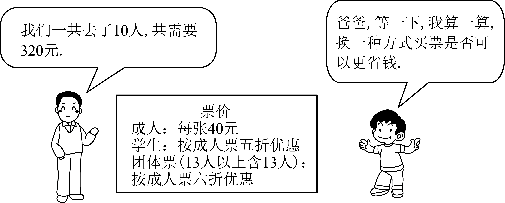
解答下列问题：
(1)明明他们一共去了几个成人和几个学生？
(2)请你帮助明明算一算，用哪种购票方式更省钱？请说明理由．
(3)购完票后，明明发现七（2）班的小涛等7名同学和他们的家长也来购票．若家长人数不超过6，则怎样购票更省钱？
2．北京某景区，门票价格规定如下表：某校七年级（1）、（2）两个班共 人去该景区游玩，其中（1）班人数多于（2）班人数，且（1）班人数不足
人去该景区游玩，其中（1）班人数多于（2）班人数，且（1）班人数不足 人，如果两个班分别以班为单位单独购买门票，一共应付
人，如果两个班分别以班为单位单独购买门票，一共应付 元．
元．
购票张数 | 1～50张（包含50张） | 50～100张（不包含50张） | 100张以上 |
每张票的价格 | 60元 | 50元 | 40元 |
(1)去该景区游玩的七年级（1）班和（2）班各有多少学生？
(2)如果七年级（1）班有12名学生因需参加学校竞赛不能外出游玩，（2）班学生可以全员参加游玩，作为组织者，你有几种购票方案？通过比较，你该如何购票才能最省钱？
3．为进一步加强学生“学党史、知党情、跟党走”的信心，培养学生的民族精神和爱国主义情怀，某学校组织开展以“观看红色电影，点燃红色初心”为主题的教育活动．电影票价格表如下：
购票张数 | 1至40 | 41至80 | 80以上 |
每张票的价格 | 20元 | 18元 | 免2张门票，其余每张17元 |
该校七年级两个班共有83名学生去看电影，其中七（1）班的学生人数超过30，但不足40．
(1)如果两个班都以班为单位单独购票，一共付了1572元．求七（2）班学生的人数；
(2)在（1）所得的班级学生人数下，如果七（1）班有7名学生因有比赛任务不能参加这次活动，请你为两个班级设计购买电影票的方案，并指出最省钱的方案．
4．某景区，门票价格规定如下表：
购票张数 | 1~50张（含50张） | 50~100张（不含50张） | 100张以上 |
每张票的价格 | 60元 | 50元 | 40元 |
某校七年级（1）、（2）两个班共101人去该景区游玩，其中（1）班人数多于（2）班人数，且（1）班人数不足100人，如果两个班分别以班为单位单独购买门票，一共应付5450元．
(1)去该景区游玩的七年级（1）班和（2）班各有多少学生？
(2)如果七年级（1）班有10名学生因需参加学校竞赛不能外出游玩，（2）班学生可以全员参加游玩，作为组织者，你有几种购票方案？通过比较，你该如何购票才能最省钱？
5．2021年冬季即将来临，德强学校准备组织七年级学生参观冰雪大世界，参观门票学生票价为160元，冰雪大世界经营方为学校推出两种优惠方案，方案一：“所有学生门票一律九折”；方案二：“如果学生人数超过100人，则超出的部分打八折”．
(1)求参观学生为多少人时，两种方案费用一样．
(2)我校七年级共有240名学生参观冰雪大世界，学校采用哪种优惠方案购买门票更省钱？
6．某校组织学生外出研学，旅行社报价为300元/人，旅行社对30人以上团体推出两种优惠举措：
方案一：每人收费七五折优惠；方案二：免去2人的费用，其余每人八折优惠．
(1)用代数式表示，当参加研学的总人数是
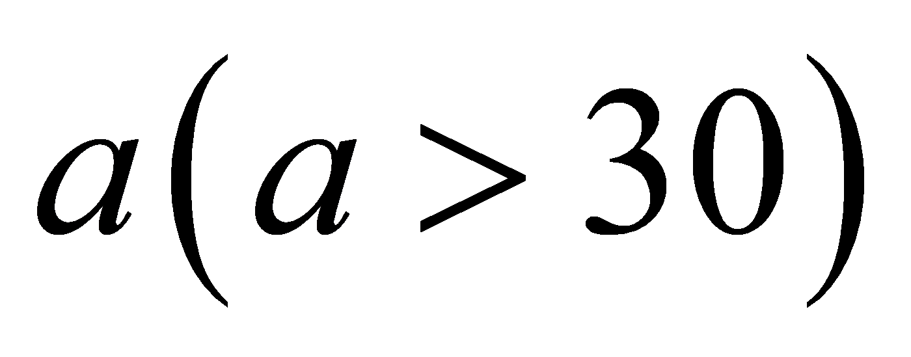
人时，两种方案所需的费用分别是多少元？(2)当 时，选择哪种方案较为合算？说说你的理由．
时，选择哪种方案较为合算？说说你的理由．
(3)到达目的地后，该校学生分成甲、乙两组分别参观某革命胜地和考古遗址公园，该革命胜地门票为80元/人，考古遗址公园门票为60元/人，已知乙组人数比甲组人数的2倍少10人，若这两组在各自的景点处所花费的门票费用相同，求甲、乙两组的人数．
考点02 加工方案问题
7．某经销商计划找工厂代理加工一批果干，现有甲、乙两厂都想代理加工，已知甲厂每天加工果干80箱，乙厂每天加工果干120箱，且单独加工这批果干甲厂比乙厂要多用20天．在加工过程中，该经销商需付甲、乙厂每天的费用分别为400元和600元，另外，每个工厂需要一名营养师进行技术指导，并由经销商提供每天100元的指导费．
（1）分别求甲、乙两厂单独加工这批果干所需的时间；
（2）经甲、乙两厂与经销商协调，现有三种代理加工方案．
方案一：由甲厂单独完成；
方案二：由乙厂单独完成；
方案三：先由甲、乙两厂按原生产速度合作一段时间后，甲厂停工，乙厂单独完成剩余部分，同时乙厂每天的生产速度提高25%（乙厂提速后，该经销商需付乙厂每天的费用涨到700元），且乙厂的全部工作时间比甲厂的2倍还多4天．
①方案三中，甲厂加工了多少天？
②请你通过计算帮该经销商选择一种既省时又省钱的代理加工方案．
8．松雷中学计划加工一批校服，现有甲、乙两个加工厂都想加工这批校服，已知甲工厂每天能加工这种校服18套，乙工厂每天能加工这种校服27套，且单独加工这批校服甲厂比乙厂要多用10天．在加工过程中，学校需付甲厂每天费用75元、付乙厂每天费用115元．
（1）求这批校服共有多少套；
（2）为了尽快完成这批校服，先由甲、乙两厂按原生产速度合作一段时间后，甲工厂停工，而乙工厂每天的生产速度提高 ，乙工厂单独完成剩余部分，且乙工厂的全部工作时间是甲工厂工作时间的2倍还少7天，求乙工厂共加工多少天；
，乙工厂单独完成剩余部分，且乙工厂的全部工作时间是甲工厂工作时间的2倍还少7天，求乙工厂共加工多少天；
（3）经学校研究决定制定如下方案：方案一：由甲工厂单独完成；方案二：由乙工厂单独完成；方案三：按（2）问方式完成；并且每种方案在加工过程中，每个工厂需要一名工程师进行技术指导，并由学校提供每天15元的午餐补助费，请你通过计算帮学校选择一种最省钱的加工方案．
9．某企业已收购毛竹90吨，根据市场信息，将毛竹直接销售，每吨可获利100元；如果对毛竹进行粗加工，每天可加工8吨，每吨可获利800元；如果进行精加工，每天可加工0.5吨，每吨可获利5000元．由于条件限制，在同一天中只能采用一种方式加工，并且必须在一个月（30天）内将这批毛竹全部销售，为此研究了两种方案：
(1)方案一：将毛竹都进行粗加工销售，则可获利多少元？（结果用科学记数法表示）
(2)方案二：30天时间都进行精加工，未来得及加工的毛竹在市场上直接销售，则可获利多少元？（结果用科学记数法表示）
(3)是否存在第三种方案，将部分毛竹精加工，其余毛竹粗加工，并且恰好在30天内完成．若存在，求销售后所得利润；若不存在，请说明理由．
10．列方程解应用题：
重庆恒都农业集团已建成涵盖牧草种植、饲料加工、品种繁育、肉牛育肥、电子交易、肉牛屠宰、精深加工、冷链运输、市场销售、科技研发于一体的全产业链格局．已知其旗下牛肉加工厂12月份共计从屠宰场以 万元/吨价格购买了38吨生牛肉为元旦节做准备，根据市场信息，若将生牛肉直接在市场上销售，售价为
万元/吨价格购买了38吨生牛肉为元旦节做准备，根据市场信息，若将生牛肉直接在市场上销售，售价为 万元/吨，如果对牛肉进行粗加工，每天可加工7吨生牛肉，但是成品只有原材料的
万元/吨，如果对牛肉进行粗加工，每天可加工7吨生牛肉，但是成品只有原材料的
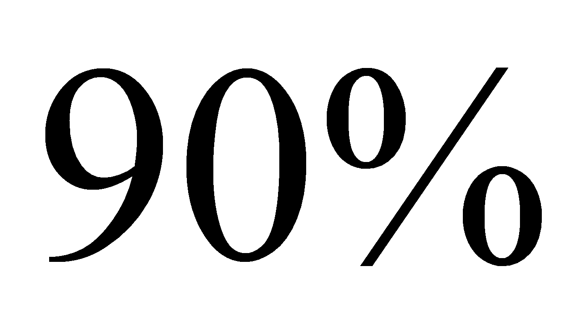
，并且每消耗1吨原材料还有其他成本 万元，这样粗加工后所得成品的售价能达到6万元/吨；如果对牛肉进行精加工，每天可加工3吨生牛肉，但是成品只有原材料的
万元，这样粗加工后所得成品的售价能达到6万元/吨；如果对牛肉进行精加工，每天可加工3吨生牛肉，但是成品只有原材料的 ，并且每消耗1吨原材料还有其他成本
，并且每消耗1吨原材料还有其他成本 万元，这样精加工后所得成品的售价能达到10万元/吨．受疫情影响，加工厂每天只能采取一种加工方式，并且本月的加工时间最多只有10天，现有两种加工方案：
万元，这样精加工后所得成品的售价能达到10万元/吨．受疫情影响，加工厂每天只能采取一种加工方式，并且本月的加工时间最多只有10天，现有两种加工方案：方案一：尽可能多的精加工，剩余的生牛肉在市场上直接销售；
方案二：一部分粗加工，一部分精加工，且刚好10天时将所有原材料加工完．
（1）若按照方案二进行加工，需要粗加工多少天？
（2）哪个方案获得的利润最大？最大利润是多少？
（3）今年1月份时，为了应对春节期间的牛肉加工产品需求量剧增的情况，该加工厂某车间临时开放多条生产线，使得粗加工和精加工可以同时进行，其中需要粗加工的生牛肉数量是精加工的2倍．上午全部工人在粗加工产品，下午一半的工人仍然继续粗加工（上、下午的工作时间相等），到下班时刚好把粗加工的原材料全部处理完毕，另一半的工人去精加工产品，到下班时还剩下一小部分未完成，最后由5个工人再用一整天的时间刚好加工完．如果该车间工人每人每小时精加工的效率是粗加工效率的一半，则该车间工人共有多少人？
11．安宁市的一种绿色蔬菜，若在市场上直接销售，每吨利润为1000元，若经粗加工后销售，每吨利润可达4500元；若经精加工后销售每吨获利7500元．当地一家农产品企业收购这种蔬菜140吨，该企业加工厂的生产能力是：如果对蔬菜进行粗加工，每天可以加工16吨，如果进行精加工，每天可加工6吨，但两种加工方式不能同时进行，受季节条件限制，企业必须在15天的时间将这批蔬菜全部销售或加工完毕，企业研制了四种可行方案：
方案一：全部直接销售；
方案二：全部进行粗加工；
方案三：尽可能多地进行精加工，没有来得及进行精加工的直接销售；
方案四：将一部分进行精加工，其余的进行粗加工，并恰好15天完成．
请通过计算以上四个方案的利润，帮助企业选择一个最佳方案使所获利润最多？
12．某种绿色食品，若直接销售，每吨可获利润0.1万元；若粗加工后销售，每吨可获利润0.4万元；若精加工后销售，每吨可获利润0.7万元．某公司现有这种绿色产品140吨，该公司的生产能力是：如果进行粗加工，每天可加工16吨；如果进行精加工，每天可加工6吨，但两种加工方式不能同时进行．受各种条件限制，公司必须在15天内将这批绿色产品全部销售或加工完毕，为此该公司设计了三种方案：
方案一：全部进行粗加工；
方案二：尽可能多地进行精加工，没有来得及进行精加工的直接销售；
方案三：将一部分进行精加工，其余的进行粗加工，并恰好15天完成．
你认为选择哪种方案可获利润最多，为什么？最多可获利润多少元？
考点03 租金方案问题
13．为增强学生的社会实践活动能力，某校组织八年级全体师生进行研学活动，原计划租用45座客车若干辆，但有30人没有座位；若租用同样数量的60座客车，则多出两辆车，且其余客车恰好坐满．已知45座客车租金为每辆320元，60座客车租金为每辆410元，问：
(1)原计划租用多少辆45座客车？该校八年级师生共多少人？
(2)若租用同一种客车，要使每名师生都有座位，应该怎样租车才合算？
14．为增强学生生态保护意识，提升科学探究素养，某学校组织六年级学生深入湿地自然保护区开展研学活动，如果租用 座的客车，则有
座的客车，则有 人没有座位；如果租用同样数量的
人没有座位；如果租用同样数量的 座的客车，则除多出
座的客车，则除多出 辆外，其余客车恰好坐满，已知租用座的客车日租金为每辆
辆外，其余客车恰好坐满，已知租用座的客车日租金为每辆 元，租用座的客车日租金为每辆
元，租用座的客车日租金为每辆 元，租用哪种客车更合算？租几辆车？
元，租用哪种客车更合算？租几辆车？
15．1套检测仪器由2个 部件和3个
部件和3个 部件构成，用
部件构成，用 钢材可以做40个部件或240个部件．
钢材可以做40个部件或240个部件．
(1)若要用 钢材制作若干套这种仪器，应用多少钢材做部件，多少钢材做部件？
钢材制作若干套这种仪器，应用多少钢材做部件，多少钢材做部件？
(2)现在某公司要租赁这批仪器 套，每天的付费方案有如下两种：
套，每天的付费方案有如下两种：
方案一：当不超过60时，每套支付租金100元；当超过60时，超过的套数每套支付租金打八折．
方案二：不论租赁多少套，每套支付租金90元．
当超过60时，选择哪种租赁方案更合算？请说明理由．
解：设用
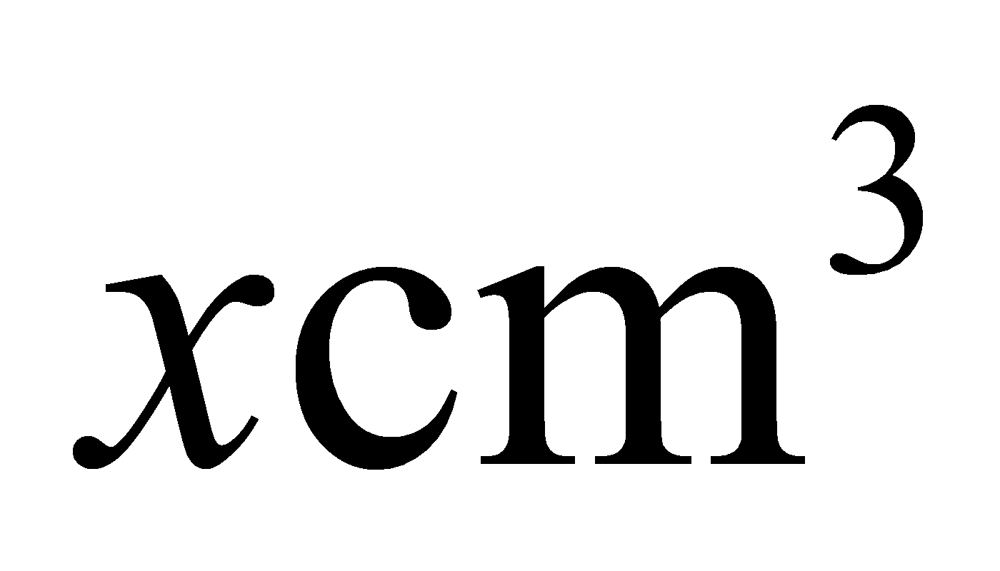
钢材做部件，用 钢材做部件．依题意，得
钢材做部件．依题意，得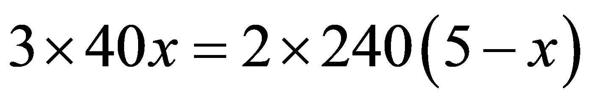
，解得 ，则
，则 ．
．答：用
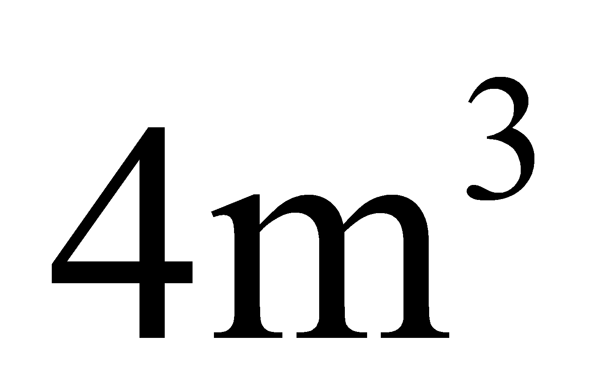
钢材做部件，用钢材做部件．16．某中学组织学生春游，原计划租用座客车若干辆，但有人没有座位；若租用同样数量的座客车，则多出一辆车，且其余客车恰好坐满，已知座客车每日每辆租金为
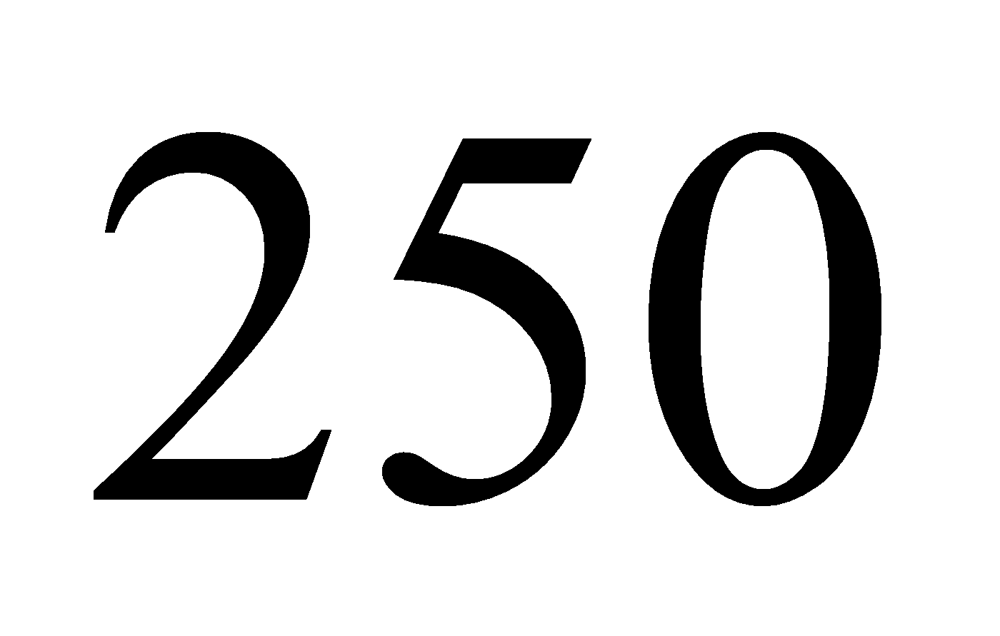
元，座客车每日每辆租金为 元．试问：
元．试问：(1)春游学生共多少人，原计划租座客车多少辆？
(2)若租用同一种车，要使每位同学都有座位，怎样租车更合算．
17．某中学组织学生参加文艺汇演，如果单租45座客车若干辆，且每辆刚好坐满；如果单租60座客车，可少租一辆，且空15个座位．已知45座客车租金为每辆250元，60座客车租金为每辆300元，试问：
(1)求参加文艺汇演的学生总人数是多少?
(2)如果单租，哪种客车省钱?
(3)如果同时租用两种客车分别租多少辆最省钱?
18．为拓宽学生视野，某中学决定组织部分师生去庐山西海开展研学旅行活动，在参加此次活动的师生中，若每位老师带19个学生，还剩11个学生没人带；若每位老师带20个学生，就有一位老师少带7个学生，为了安全，既要保证所有师生都有车坐，又要保证每辆客车上至少要有2名老师．现有甲、乙两种大客车，它们的载客量和租金如表所示．
甲种客车 | 乙种客车 | |
载客量/（人/辆） | 30 | 50 |
租金/（元辆） | 300 | 400 |
（1）参加此次研学旅行活动的老师和学生各有多少人？
（2）这次活动全部租甲种客车行吗？如果行，怎样安排；如果不行，请说明理由．
（3）学校计划此次研学旅行活动的租车总费用不超过4100元，租用乙种客车不少于7辆，你能得出哪几种不同的租车方案？其中哪种租车方案最省钱？请说明理由．
考点04 施工方案问题
19．为确保邵阳市第二届旅游发展大会“早安隆回，云上花瑶”成功举办，县委县政府要求云溪路彩虹大道修路工程6个月完工．现由甲、乙两工程队参与施工，已知甲队单独完成需要8个月，乙队单独完成需要12个月．为了能如期完工，前期由甲、乙两队共同施工，后期改由一个工程队单独施工．现工程队指挥部结合实际情况拟定两套工程方案：
①先由甲、乙两个工程队合作 个月后，再由甲队单独施工，保证恰好按时完成；
个月后，再由甲队单独施工，保证恰好按时完成；
②先由甲、乙两个工程队合作 个月后，再由乙队单独施工，也保证恰好按时完成；
个月后，再由乙队单独施工，也保证恰好按时完成；
求两套方案中和的值．
20．某工程队承包了一项目，现提供两种施工方案：①所有员工同时施工，计划24天完成：②将所有员工平均分成若干组施工队，分阶段投入施工，即第1组先施工，每隔天（为之间的整数，不包括5和10），增加一组员工，且每组员工从加入开始至完工结束全程参与施工．该工程队按照方案②进行施工，完工后发现最后一组员工的施工时间恰好为第一组的．（说明：无论采用何种方案，所有员工的施工速度都相等，且保持不变）
(1)求第一组施工队员的工作时间．
(2)已知这若干组施工队每组5人，则该工程队共有多少人？
21．公司需在一个月（31天）内完成新建办公楼的装修工程．如果甲、乙两个工程队合作，12天完成，如果甲单独做8天，剩下的工作由乙独做18天可以完成．
（1）求甲、乙两个工程队单独完成工作的天数；
（2）如果请甲工程队施工，公司每日需付费用2000元，如果请乙工程队施工，公司每日需付费用1400元，在规定的时间内：A、请甲工程队单独完成此项工程；B、请乙工程队单独完成此项工程；C、请甲、乙两个工程队合作完成此项工程，试问：以哪一种方案花钱最少？
22．市中区欲将四方块打造成内江的“太古里”，现一期工程已基本完工，即将进入道路施工阶段．该工程由甲队单独完成需要24天，由乙队单独完成需要16天．甲、乙两队合作施工一段时间后，由于乙队另有任务离开，剩下的工程由甲队单独施工完成．甲队单独施工完成剩余工程的时间比两队合作施工的时间少4天．
(1)求甲、乙两队合作施工的时间．
(2)施工完成后，两队共获得工程款30万元，若按每队所完成的工程量进行分配，甲、乙两队各获得工程款多少万元？
23．某市需要对某块地进行绿化改造．经招标，现有甲、乙两个工程队可供选择．已知甲队每天能完成的绿化改造面积比乙队多 平方米、甲队与乙队合作一天能完成
平方米、甲队与乙队合作一天能完成 平方米的绿化改造面积．
平方米的绿化改造面积．
(1)甲、乙两队每天各能完成多少平方米的绿化改造面积？
(2)该块地需要进行绿化改造的面积共
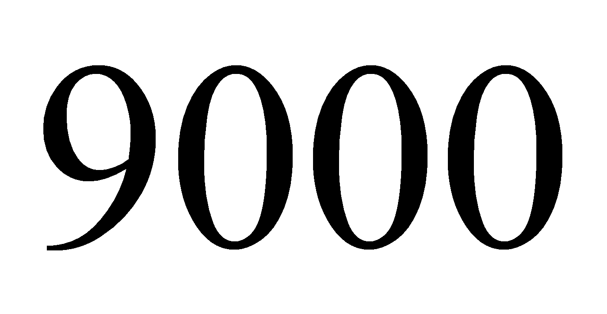
平方米，甲队每天的施工费用为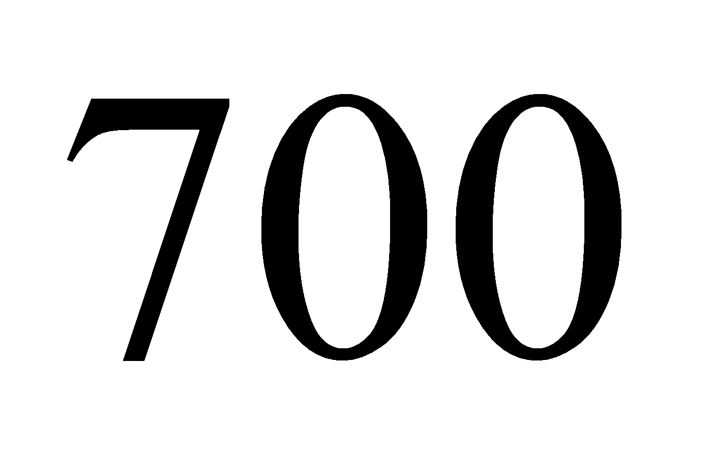
元，乙队每天的施工费用为元．在甲单独完成；乙单独完成；甲乙合作一起完成的三个方案中，哪个方案的施工费用最少？24．为推进我国“碳达峰、碳中和”双碳目标的实现，各地大力推广分布式光伏发电项目．某公司计划建设一座小型光伏发电站，若由甲工程队单独施工需要3周，每周耗资8万元，若由乙工程队单独施工需要6周，每周耗资3万元．
(1)若甲、乙两工程队全程合作施工，需要几周完成？共需耗资多少万元？
(2)若由甲、乙两工程队先合作施工，剩下的由乙工程队单独完成，恰好用了4周完成建设任务，求甲工程队施工了几周？这样安排与两工程队全程合作相比，哪种方案更省钱？（时间按整周计算）
考点05 运输方案问题
25．某公司要把某物品运往外地，现有两种运输方式可供备选．
方案一：使用货运的货车运输，装卸收费600元，另外每千米运输路程再加收6元；
方案二：使用铁路的火车运输，装卸收费1160元，另外每千米运输路程再加收4元．
(1)你认为什么情况下两种运输费用一致？
(2)当运输路程为400千米时，选择哪种运输更合适？
26．甲，乙两个仓库向A，B两地运送水泥，已知甲库可调出100t水泥，乙库可调出80t水泥，A地需70t水泥，B地需110t水泥，两库到A，B两地的路程和运费如下表：
（表中运费栏“元/（t•km）”表示每t水泥运送1km所需人民币）
路程（km） | 运费（元/t•km） | 运量（t） | ||||
甲库 | 乙库 | 甲库 | 乙库 | 甲库 | 乙库 | |
A | 15 | 20 | 12 | 12 | x | |
B | 20 | 25 | 8 | 10 | ||
设甲库运往A地水泥为xt，请填写好表．
(1)设甲库运往A地水泥为xt，请填写好表．
(2)根据这张表，甲库运往A地的总费用是 ，乙库运往B地的总费用是 ，所以全部费用是 ．
(3)若所拨全部费用是35600元，写出一种可行的运输方案．
27．某市水果批发部门欲将A市的一批水果运往本市销售，有火车和汽车两种运输方式，运输过程中的损耗均为200元/时．其他主要参考数据如下表所示：
运输工具 | 途中平均速度/（千米/时） | 运费（元/千米） | 装卸费用/元 |
火车 | 100 | 15 | 2000 |
汽车 | 80 | 20 | 900 |
(1)如果选择汽车运输的总费用比选择火车运输的总费用多1100元，你知道本市与A市之间的路程是多少千米吗？（总运费=运费+装卸费用+损耗）
(2)设A市与本市之间的距离为s千米，假如你是A市水果批发部门的经理，若要将这批水果运往本市销售，你会选择哪种运输方式．
28．某公司在A，B两地分别有库存机器16台和12台，现要运往甲、乙两地，其中运往甲地15台，运往乙地13台．从A地运一台机器到甲地的运费为500元，到乙地的运费为400元；从B地运一台机器到甲地的运费为300元，到乙地的运费为600元．
(1)设从A地运往甲地x台机器，请把下表补充完整；
收地运地 | 甲地 | 乙地 | 总计 |
A地 | x | 16台 | |
B地 | 12台 | ||
总计 | 15台 | 13台 | 28台 |
(2)如果某种调运方案的运费是10300元，那么从A，B两地分别运往甲、乙两地的机器各多少台？
29．西双版纳是一个充满热带风情的地方，气候温暖湿润，四季花开不断．丰富的植物种类为蜜蜂提供了丰富多样的蜜源，使得西双版纳的蜂蜜具有独特的风味．为了将新鲜蜂蜜运送到市场销售，需要使用专门的冷藏货车进行运输．现有两种型号的冷藏车，A型和B型，用于运输蜂蜜到甲市．请根据以下材料完成学习任务：
材料一：A型车的平均速度为80千米/小时，B型车的平均速度为100千米/小时．从西双版纳到甲市，B型车比A型车少用1.5小时．
材料二：已知A型车每辆可装载6吨蜂蜜，B型车每辆可装载5吨蜂蜜．如果单独租用B型车，则恰好装完所有蜂蜜；若单独租用相同数量的A型车，则差8吨蜂蜜才能装载满．
材料三：在材料一与材料二的条件下，冷藏车运完蜂蜜从西双版纳到甲市的相关数据如表所示：
路费单价 | 冷柜使用单价 | |
5元/（千米 | A型冷柜车 | B型冷柜车 |
16元/（小时 | 18元/（小时 | |
 辆）
辆）(1)求A型车从西双版纳到甲市用了多少小时？
(2)求这批蜂蜜共有多少吨？
(3)本次蜂蜜从西双版纳到甲市的运输，应如何选择A、B型车，使得总费用最少？最少的总费用是多少元？
30．综合与实践：砂糖桔是广西某县传统特产，具有皮薄，汁多，化渣，味清甜，吃后沁心润喉，是老少皆宜的美味佳品．请阅读以下材料，完成学习任务：请同学们根据材料一、材料二提供的信息完成3个任务：
材料一：某县批发市场计划运输一批砂糖橘到甲地出售，为保证砂糖桔新鲜需用带冷柜的货车运输．现有 | |||||||||
材料二：已知 | |||||||||
材料三：在材料一与材料二的条件下，冷柜车运完砂糖桔从某县到甲地时，运输的相关数据如下表所示：
（参考公式：冷柜使用费 | |||||||||
 小时，
小时， 使用时间
使用时间 冷柜使用费）
冷柜使用费）(1)请求出A型车从某县到甲地的时间；
(2)问这批砂糖桔共有多少吨？
(3)本次砂糖桔从某县到甲地的运输单独安排A型车或B型车，应该选用哪种车型使得总费用较少？较少的总费用是多少元？
考点06 进货方案问题
31．忠县作为“中国柑橘城”，柑橘产业已经非常成熟，形成了多个特色品种，其中最出名的当属“爱媛果冻橙”和“沃柑”．某超市用
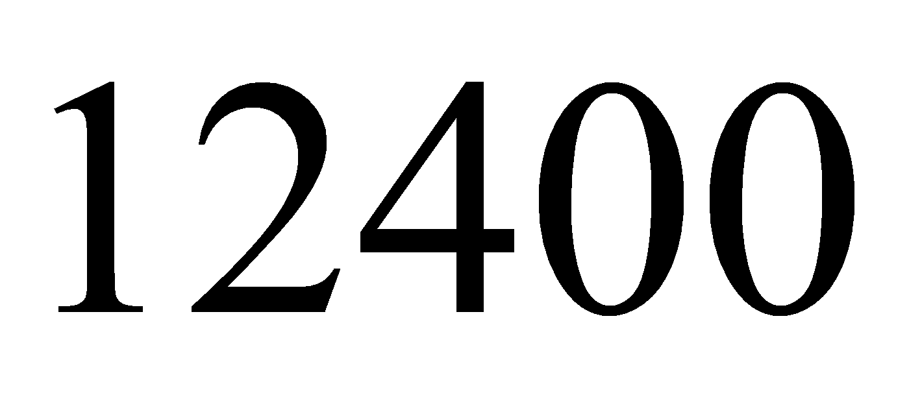
元从农户处购进“果冻橙”和“沃柑”两个品种的柑橘共 斤．进价和售价如下表所示：
斤．进价和售价如下表所示：果冻橙 | 沃柑 | |
进价（元/斤） |
|
|
售价（元/斤） |
|
|


(1)求该超市购进“果冻橙”和“沃柑”各多少斤？
(2)由于水果运输过程中会有一定的损坏，“果冻橙”的损坏率为 ，“沃柑”的损坏率为
，“沃柑”的损坏率为
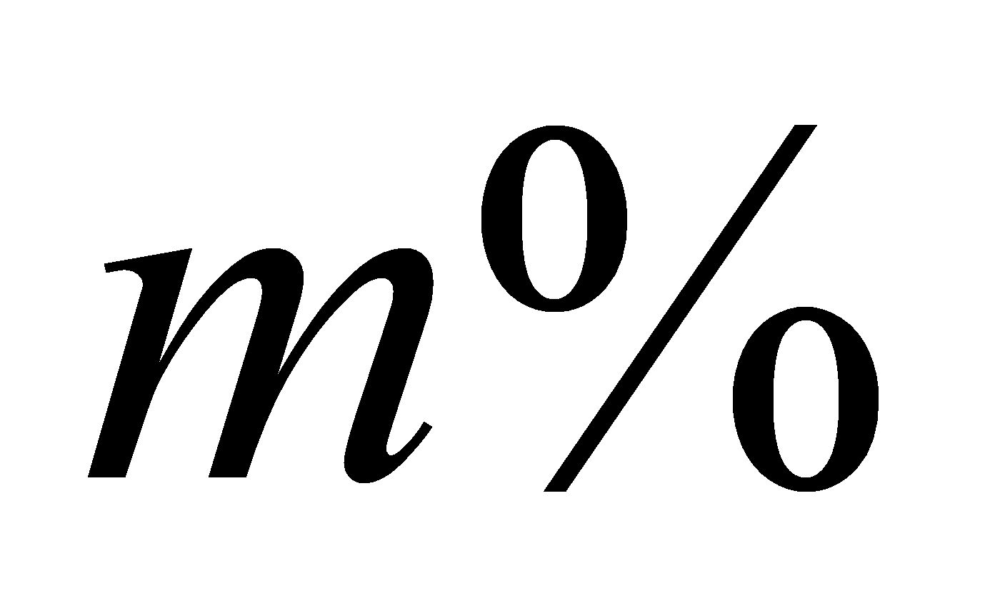
，损坏的柑橘不能进行销售，若这批柑橘全部售出的总利润为 元，求的值；
元，求的值；(3)该超市第二次进货时，农户给出了如下优惠方案：
“果冻橙”优惠方案
一次性购买数量 | 不超过 | 超过 |
折扣数 | 九折 | 八折 |
“沃柑”优惠方案
购买总金额 | 不超过 | 超过 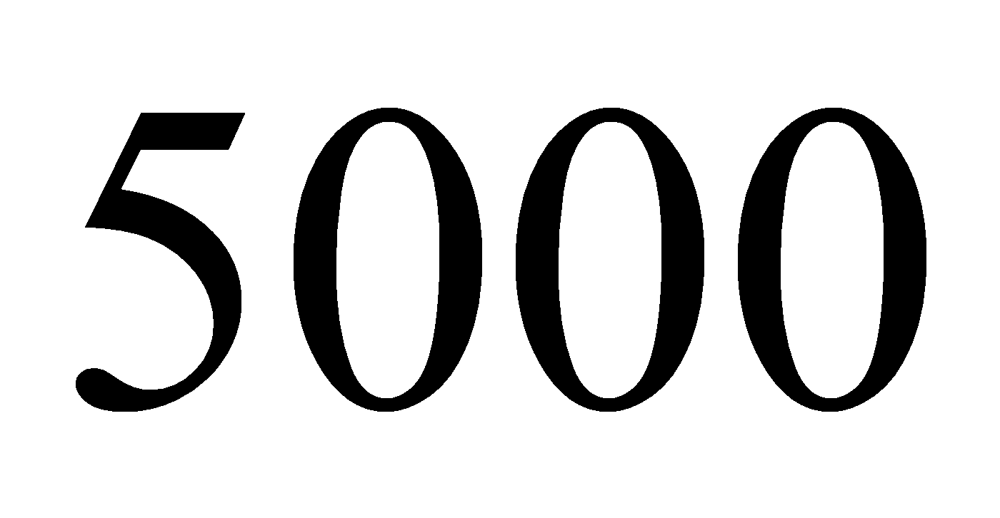 元 | 超过元 |
返现金金额 | 0元 | 直接返现金 | 先返购买总金额的 |
 元
元 元
元已知超市购进“果冻橙”共支付了 元，购进“沃柑”共支付了元，运输中仍按照（2）中的损坏率考量，将第二次购进的两种柑橘全部卖完，一共可获得利润多少元？
元，购进“沃柑”共支付了元，运输中仍按照（2）中的损坏率考量，将第二次购进的两种柑橘全部卖完，一共可获得利润多少元？
32．某店铺老板到手机配件专卖店进货，该店推出甲、乙两种配件促销活动，已知甲配件每件标价20元，乙配件每件标价4元，现有以下两个促销方案，方案一：买一送一（每买一件甲配件，送一件乙配件），方案二：全场九折（即全部配件按标价的九折销售）．
(1)若购买50件甲配件与200件乙配件，则两个方案所需的费用相差多少元？
(2)若购买甲配件的件数比乙配件少100件时，两个方案所需的费用相同，则此时购买两种配件各多少件？
33．商场计划拨款9万元，从厂家购进50台电视机，已知该厂家生产三种不同型号的电视机，出场价分别为甲种每台1500元，乙种每台2100元，丙种每台2500元．
(1)若商场同时购进其中两种不同型号的电视机共50台，用去9万元，请你研究一下商场的进货方案有哪几种？
(2)若商场销售一台甲种电视机可获利150元，销售一台乙种电视机可获利200元，销售一台丙种电视机可获利250元．在同时购进两种不同型号的电视机的方案中，为使销售时获利最多，该选择哪种进货方案？
34．某网店从服装加工厂购进 两款恤．两款恤的进货价和销售价如下表：
两款恤．两款恤的进货价和销售价如下表：
类别价格 |
|
|
进货价（元/件） |
|
|
销售价（元/件） |
|
|


(1)第一次网店用
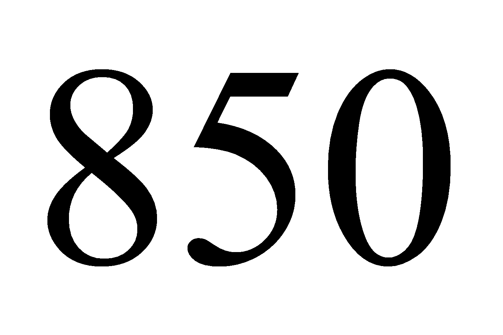
元购进了两款恤共 件，求两款恤分别购进的件数；
件，求两款恤分别购进的件数；(2)第一次购进的恤售完后，该网店计划再次从服装加工厂购进两款恤共 件，且进货总价不高于第一次卖两款T恤的销售总额．应如何设计进货方案才能获得最大利润；
件，且进货总价不高于第一次卖两款T恤的销售总额．应如何设计进货方案才能获得最大利润；
(3)网店第二次进货时采取了（ ）中取得最大利润时的方案，当款恤全部售出时，款恤还有部分没售出，网店把剩余的款恤按原销售价的
）中取得最大利润时的方案，当款恤全部售出时，款恤还有部分没售出，网店把剩余的款恤按原销售价的 折促销，这样第二次购进的两款恤售完后，获得的利润为
折促销，这样第二次购进的两款恤售完后，获得的利润为 元．求第二次款恤按原销售价售出的件数．（注：利润
元．求第二次款恤按原销售价售出的件数．（注：利润 销售价
销售价 进货价）
进货价）
35．某商场计划拨款9万元从厂家购进50台电视机，已知该厂家生产三种不同类型的电视机，出厂价分别为：甲种每台1500元，乙种每台2100元，丙种每台2500元．
(1)若商场用9万元同时购进甲、乙两种不同型号的电视机共50台，求应购进甲、乙两种电视机各多少台？
(2)若商场销售一台甲种电视机可获利150元，销售一台乙种电视机可获利200元，销售一台丙种电视机可获利250元．试问：同时购进两种不同型号电视机的方案可以有几种（每种方案必须刚好用完9万元）？为使销售时获利最多，应选择哪种进货方案？并说明理由．
36．今年成都的天气比往年要寒冷许多，进入12月份以后人们对暖手宝热水袋的需求开始增加，某超市第一次共购进300件甲、乙两种品牌的暖手宝热水袋，全部出售后赚得2700元．已知甲品牌暖手宝的进价为22元/件，售价为29元/件，乙品牌暖手宝的进价为30元/件，售价为40元/件．
（1）该超市第一次购进甲、乙两种暖手宝各多少件？
（2）该超市第二次以第一次的进价又购进甲、乙两种暖手宝，其中乙品牌的件数不变；甲品牌按原价销售，乙品牌打九折销售．第二次两种暖手袋都销售完以后获得的总利润比第一次获得的总利润多600元，求第二次购进甲品牌多少件？
（3）该超市第三次进货时，厂家给出了如下优惠方案：
甲品牌优惠方案
一次性购买数量 | 不超过100件的部分 | 超过100件的部分 |
折扣数 | 九折 | 八折 |
乙品牌优惠方案
购买总金额 | 不超过3000元 | 超过3000元但不超过5000元 | 超过5000元 |
返现金金额 | 0元 | 直接返现金200元 | 先返购买总金额的5％，再返现金200元 |
已知超市购进甲品牌共支付了3740元，购进乙品牌共支付了4930元．将第三次购进的甲、乙两种暖手宝全部卖完一共可获得多少利润？